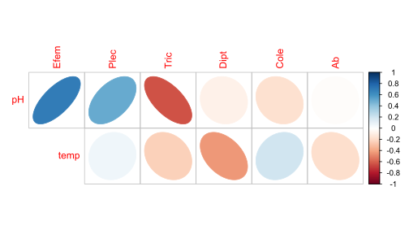

# Librerías requeridas
library(tidyverse)
library(dplyr)
library(kableExtra) # Para la edición de tablas
library(readxl) # Cargar bases de Excel
require(stats) # No se requiere instalar
library(lattice) # No se requiere instalar
library(ggrepel) # insertar rótulos a los puntos
require(SciViews) # Fig. dispersión con coef. de pearson
library(plotrix) # Figuras de cajas con múltiples variables
library(corrplot) # Figuras de elipses
library(psych) # Matrices de correlación para figuras de elipses
library(reshape) # Figuras de cajas con múltiples variables
library(reshape2) # Figuras de cajas con múltiples variables
library(gridExtra) # Para figuras estadísticas (varios factores)
library(grid) # Para figuras estadísticas (varios factores)
library(ggplot2) # Paquete gráfico
library(forcats) # Para manipulación de factores
library(viridis) # Opciones de paletas de coloresExploración gráfica multivariada - base Insectos
Objetivo de la actividad:
Poner en práctica el manejo de bases de datos y la visualización de datos uni, bi, tri y multivariados, para responder principalmente a dos tipos de objetivos:
Relaciones entre variables biológicas y de estas con las ambientales (ej. figuras de elipses, pares, dispersión y coplot).
Diferencias para el caso en el que contemos con variables agrupadoras (factores o v. cualitativas), orientado a evaluar las diferencias entre variables biológicas en gradientes espaciales o temporales (ej. entre grupos de sitios).
La base de datos a utilizar se presenta en dos formatos: Insectos.csv e Insectos.xlsx. Esta base cuenta con 2 variables ambientales y 6 biológicas, así como con un factor o variable agrupadora (cuencas), todo esto distribuido en las columnas. Además cuenta con y 20 localidades o quebradas (filas).
Procedimiento de la exploración
Cargar librerías requeridas
Cargar la base
Insectos(usar diferentes opciones para practicar)Explorar al objetivo 1 (figuras de elipses, pares, dispersión y coplot).
Explorar al objetivo 2 (figuras de elipses, pares, dispersión y coplot).
Realizar las opciones gráficas relacionadas a los objetivos.
Realizar transformaciones de los datos, para mejorar la visualización de patrones.
Practicar con leyendas y resultados de la visualización realizada.
Cargar las librerías requeridas
Cargar o importar la base de datos
A continuación se presentan tres formas diferentes de importar o cargar bases de dato, tanto en el formato original de Excel (xlsx) como en el formato plano (csv). Se utilizará la tercera opción para el resto del ejrcicio.
#------------
datos <- read_excel("Insectos.xlsx") # paquete "readxl"
head(datos)# A tibble: 6 × 10
quebrada cuenca pH temp Efem Plec Tric Dipt Cole Ab
<dbl> <chr> <dbl> <dbl> <dbl> <dbl> <dbl> <dbl> <dbl> <dbl>
1 1 cuen1 6.8 17.4 26 4 9 30 3 72
2 4 cuen1 7.3 16.8 17 6 9 25 1 58
3 11 cuen1 5.6 16 9 3 28 24 3 67
4 13 cuen1 6.3 17.8 2 3 25 21 6 57
5 19 cuen1 5.6 18.2 6 4 24 12 13 59
6 3 cuen2 6.3 17 7 2 25 10 1 45# Explorar estructura
# glimpse(datosl)
# summary(datos)1. Figuras de elipses
El Paquete corrplot es el que permite realizar las opciones gráficas de elipses a color, ingresar a este enlace:
Otro enlace a corrplot:
Las figuras de correlación realizadas con el paquete corrplot, son una buena opción para evaluar los patrones generales de relaciones positivas (azul) y/o negativas (rojo), entre parejas de variables. Funcionan para objetivos orientados en la relaciones de (1) variables biológicas, (2) variables ambientales y (3) variables biológicas con las ambientales.
# Elipses con colores
M <- cor(datos[,3:10]) # Matriz de Correlación (M)La Figura 1 muestra la relación entre las variables, a partir de figuras de elipses y de circulos.
# Elipses con colores
par(mfrow = c(1,2), mar = c(3, 3, 2, 1))
corrplot(M, method = "ellipse") # Figura de correlaciones con elipses
# Elipses con colores
corrplot(M, method = "circle") # Figura de correlaciones con circulos
par(mfrow = c(1,1))La Figura 2 muestra la relación entre las variables, a partir de figuras de elipses, además incorpora al nivel de correlación entre las parejas de variables con los coeficientes de Pearson.
# Elipses con colores
corrplot.mixed(M, upper="ellipse")La siguiente opción de correlación (Figura 3), presenta un código más compejo que las anteriores, pero permite generar una visualización más completa de las relaciones entre parejas de variables y sus coeficientes de correlación de Pearson (también se pueden probar otros coeficientes como Spearman o Kendall).
corrplot(M, method = "circle", # Correlaciones con circulos
type = "lower", insig="blank", # Forma del panel
order = "AOE", diag = FALSE, # Ordenar por nivel de correlación
addCoef.col ="black", # Color de los coeficientes
number.cex = 0.8, # Tamaño del texto
col = COL2("RdYlBu", 200)) # Transparencia de los circulos
La siguiente figura de correlaciones (Figura 4) es apropiada para casos en los que tenemos muchas variables biológicas (ej. tipos de taxones) e interesa evaluar su relación con las variables ambientales.
# Elipses con colores
M1 <- cor(datos[,3:4], datos[,5:10]) # Matriz de Correlación (M)
# Elipses con colores
corrplot(M1, method = "ellipse", type="upper")

3. Figuras de Dispersión por pares de variables (pairs)
El Paquete pairs es el que permite realizar las opciones gráficas de dispersión por parejas de variables, ingresar a este enlace:
Otro enlace a pairs:
Los gráficos de pares son complementarios a los de correlación, pero permiten conocer otros detalles en las relaciones entre parejas de variables (ej. relaciones lineaes vs. suavizadas o loess). En la siguiente figura (?@fig-fig5), además de visualizar si la dispersión de los puntos se orienta hacia una relación positiva o negativa, entre más se ajuste la línea verde (tendencia lineal), con la negativa (tendencia no lineal, suavizada o loess), se puede precisar mejor, si hay una verdadera relación lineal entre las parejas de variables en comparación.
A continuación se presenta una variante a las figuras de pares (Figura 5), que por medio de la función panel, permite incorporar otros elementos en la matriz gráfica, como histogramas para visualizar el patrón de simetría de cada variable y el valor de correlación con coeficientes como el de Pearson. Las líneas rojas definen la relación no lineal o suavizada (loess o lowess) entre las parejas de variables.
# Correlaciones de Pearson
library(SciViews)
pairs(datos[,c(3,5,7,8,10)], diag.panel = panel.hist,
upper.panel = panel.cor, lower.panel = panel.smooth)3. Histogramas
Las dos figuras que siguen (Figura 6 y Figura 7), utilizan comandos del paquete ggplot2 para visualizar de una forma más compacta a la distribución de frecuencias de la variable abundancia de insectos (AB) en las cuatro cuencas evaluadas.
# Frecuencias de abundancias por densidad
ggplot(data = datos, aes(x = Ab, color = cuenca)) +
geom_density(aes(fill = cuenca), alpha = 0.5) +
labs( y="Frecuencia", x="Abundancia") +
theme_bw() +
theme(panel.grid = element_blank()
)# Otra opción
ggplot(data = datos, aes(x = Ab, color = cuenca)) +
geom_density(aes(fill = cuenca)) +
facet_wrap(~ cuenca) +
theme_bw() +
theme(panel.grid = element_blank()
)4. Dispersión X-Y
Dispersión X-Y con ggplot2
El Paquete ggplot2 es el que permite realizar las opciones gráficas de dispersión bivariados, ingresar a este enlace:
Otro enlace a ggplot2:
Las tres figuras que siguen, muestran opciones más compactas que la grafica anterior, para visualizar relaciones bivariadas en los descriptores en estudio, permitiendo también analizar el patrón de dispersión de los datos para cada cuenca evaluada (colores). La Figura 8 permite visualizar la relación lineal incluyendo bandas grises que representan los límites de confianza de la proyección realizada.
# Regresiones lineales (Esquema ggplot2)
ggplot(datos,aes(x = pH,y = Efem)) +
geom_point(aes(color = cuenca), size = 3) +
geom_smooth(method= "lm") +
theme_bw() +
theme(panel.grid = element_blank()
)La Figura 9, a diferencia de la anterior, permite visualizar una relación suavizada en la pareja de variables en comparación. Esta relación no lineal es conocida como Loess o Lowess.
# Regresiones suavizadas - Loess o Lowess (Esquema ggplot2)
ggplot(datos,aes(x = pH, y = Efem)) +
geom_point(aes(color = cuenca), size = 3) +
geom_smooth() +
theme_bw() +
theme(panel.grid = element_blank()
)En la Figura 10 se eliminan los intervalos de confianza (bandas grises) y aumenta el suavizamiento con el comando span = 0.4.
# Regresiones suavizadas (Loess)
ggplot(datos,aes(x = pH, y = Efem)) +
geom_point(aes(color = cuenca), size = 3) +
geom_smooth(se = FALSE, span = 0.4) +
theme_bw() +
theme(panel.grid = element_blank()
)5. Cajas y Bigotes
El Paquete lattice es uno de los que permite realizar las opciones gráficas de cajas, ingresar a este enlace:
El Paquete ggplot2 presenta opciones más estéticas y robustas para estas y muchas más figuras, ingresar a este enlace:
Enlaces de paletas de colores para la edición de las figuras:
Cajas con un factor: Cuencas.
A continuación se visualiza el patrón de variación en la abundancia de los insectos (Figura 11), para las cuatro cuencas evaluadas, adicionando colores especificos, tomados de los enlaces anteriores.
# Buscar en google: colorbrewer2
ggplot(datos, aes(x=cuenca, y=Ab)) +
geom_boxplot(aes(fill = cuenca)) +
labs(x="Cuencas", y= "Abundancia de Insectos") +
scale_fill_manual(values = c('#fc8d59','#ffffbf','#99d594','#377eb8')) +
theme_bw() +
theme(panel.grid = element_blank()
)
# geom_boxplot(notch = T,... para las muescas.Paréntesis Base de datos de lirios (iris) para figura de violín (Figura 12). Estas figuras permiten visualizar la simetría en la distribución de las frecuencias de las variables.
# violin: como histograma acostado
ggplot(iris, aes(x = Species, y = Sepal.Length)) +
geom_violin(aes(fill = Species)) +
geom_jitter() +
scale_fill_manual(values = c('#fc8d59','#ffffbf','#99d594')) +
theme_bw() +
theme(panel.grid = element_blank()
)
La Figura 13 muestra su versatilidad en que permite incorporar diferentes variables por cada panel presentado. Las cajas de colores representan a los grupos en comparación (cuencas).
# Figuras multivariadas de Cajas y bigotes
ggplot(melt(datos[,c(2,c(3,7,8,10))]), aes(x=variable, y=value)) +
geom_boxplot(aes(fill=cuenca)) +
scale_fill_manual(values = c('#fc8d59','#ffffbf','#99d594','#377eb8')) +
labs(x="",y="Abundancia") +
facet_wrap(~ variable,scales="free") +
theme_bw() +
theme(panel.grid = element_blank()
)6. Coplot
Las figuras de coplot, permiten relacionar a tres variables, en donde una de ellas puede ser continua o discreta, mediante segmentaciones.En la Figura 14 se incorporan regresiones suavizadas (loess). Seis páneles en la relación pH y Efemerópteros se asocian a seis barras de temperatura, en donde el primer panel de la parte inferior se correlaciona con la primera barra de temperatura, ubicada a la izquierda y así sucesivamnte.
# Coplot con líneas de ajuste suavizado (loess)
with(datos, {
coplot(Efem~pH|temp,
panel = panel.smooth)})Para este caso (?@fig-fig27), se realiza una categorización de dos variables contínuas, que permitirán construir el coplot sin solapamiento de las barras de la tercera variable. Las relaciones se proyectan de forma lineal y el la siguiente ifura serán de forma suavizada.
Categorización de las variables ambientales
Este método divide la variable en tres partes iguales (terciles) utilizando los cuantiles de la distribución. En el siguiente ejercicio se crea una variable categórica llamada temp_Level.
# Categorización de la temperatura
datos <-
datos %>%
mutate(clasetemp = case_when(
temp <= quantile(temp, 1/3, na.rm = TRUE) ~ "T.Baja",
temp <= quantile(temp, 2/3, na.rm = TRUE) ~ "T.Media",
temp <= quantile(temp, 3/3, na.rm = TRUE) ~ "T.Alta"
))
# Categorización del pH
datos <-
datos %>%
mutate(clasepH = case_when(
pH <= quantile(pH, 1/3, na.rm = TRUE) ~ "pH.Bajo",
pH <= quantile(pH, 2/3, na.rm = TRUE) ~ "pH.Medio",
pH <= quantile(pH, 3/3, na.rm = TRUE) ~ "pH.Alto"
))
# Se puede resumir el nivel alto por el comando "TRUE ~ "Alta"". Opción resumida de categorizar variables
# Categorización de la temperatura
datos <-
datos %>%
mutate(clasetemp1 = cut(temp, breaks=3,
labels=c("T.Baja", "T.Media", "T.Alta")))
# Categorización del pH
datos <-
datos %>%
mutate(clasepH1 = cut(pH, breaks=3,
labels=c("pH.Bajo", "pH.Medio", "pH.Alto")))# Función para el coplot
panel.lm = function(x, y, ...) {
tmp<-lm(y~x,na.action=na.omit)
abline(tmp, lwd = 1.5, col= 2)
points(x,y, ...)}# Relación trivariada - Lineal
coplot(Efem~pH | clasetemp, pch=19,
panel = panel.lm, data=datos)
coplot(Efem~pH | clasetemp, pch=19,
panel = panel.smooth, data=datos)Otra forma de categorizar las variables ambientales con el resumen estadístico summary()
# Categorización de dos variables contínuas (pH y Temp)
summary(datos[,3:9]) pH temp Efem Plec Tric
Min. :5.50 Min. :15.00 Min. : 2.00 Min. :0.00 Min. : 7.00
1st Qu.:6.00 1st Qu.:15.95 1st Qu.: 6.00 1st Qu.:3.00 1st Qu.:15.00
Median :6.50 Median :17.05 Median :12.50 Median :4.00 Median :22.00
Mean :6.48 Mean :16.99 Mean :13.75 Mean :3.85 Mean :20.95
3rd Qu.:7.00 3rd Qu.:17.88 3rd Qu.:19.00 3rd Qu.:5.00 3rd Qu.:25.00
Max. :7.50 Max. :19.80 Max. :28.00 Max. :8.00 Max. :37.00
Dipt Cole
Min. : 0.00 Min. : 1.00
1st Qu.:12.00 1st Qu.: 3.00
Median :24.50 Median : 6.00
Mean :22.15 Mean : 7.70
3rd Qu.:30.00 3rd Qu.:12.25
Max. :39.00 Max. :21.00 clasetemp <- cut(datos$temp,seq(15,20,1.2),include.lowest=T,
labels = c("t.baja", "t.media1","t.media2", "t.alta"))
clasepH <- cut(datos$pH,seq(5,8,1),include.lowest=T,
labels = c("pH.bajo", "pH.medio","pH.alto"))# Cambiar etiquetas de Layers con recode_factor()
datos <-
datos %>%
mutate(cuenca = recode_factor(cuenca,
"cuen1" = "Cuenca1",
"cuen2" = "Cuenca2",
"cuen3" = "Cuenca3",
"cuen4" = "Cuenca4"))
# Crear gráfico con etiquetas de valores atípicos redondeados
ggplot(datos, aes(x = factor(cuenca), y = Ab)) +
geom_boxplot(aes(fill = clasetemp)) +
labs(
x = "Cuencas", fill = "Temperatura",
y = "Abundancia") +
scale_color_viridis(discrete = TRUE) +
facet_wrap(~ clasetemp, nrow = 1, strip.position = "top") +
theme_bw() +
theme(
panel.grid = element_blank(),
axis.text.x = element_text(angle = 45, hjust = 1)) 7. Figuras con estadísticos (promedios, errores, …)
El Paquete ggplot2 es uno de los que permite realizar las opciones gráficas de barras con estadísticos, ingresar a este enlace:
Exploratory Data Analysis with ggplot
Existen otros enlaces en los que se puede encontrar información complementaria para figuras de barras, como los siguientes
A continuación se muestra el procedimiento con lenguaje Tidyverse, para realizar una tabla con el resumen de diferentes insumos estadísticos, para cada grupo (cuencas) de la base de datos.
# Resumen estadístico "datos_resum"
datos_resum <- datos %>% # Base de datos resumida
group_by(cuenca) %>% # Factor o variable agrupadora
summarise(datos.m = mean(Ab), # Media de cada grupo del factor
datos.de = sd(Ab), # Desviacioes estándar de cada grupo
datos.var = var(Ab), # Varianzas de cada grupo
n.Ab = n(), # Tamaño de cada grupo
datos.ee = sd(Ab)/sqrt(n())) # Error estándar de cada grupo
datos_resum# A tibble: 4 × 6
cuenca datos.m datos.de datos.var n.Ab datos.ee
<fct> <dbl> <dbl> <dbl> <int> <dbl>
1 Cuenca1 62.6 6.58 43.3 5 2.94
2 Cuenca2 49.2 5.40 29.2 5 2.42
3 Cuenca3 73.8 1.30 1.7 5 0.583
4 Cuenca4 88 10.1 102. 5 4.53 La siguiente asignación (DatosPlot), incorpora las capas requeridas para realizar una figura de columnas y de líeas acotadas, que representan a los promedios y a los errores estándar respectivamente.
# Figura de promedios y errores estándar
DatosPlot<-
ggplot(datos_resum, aes(cuenca, datos.m, dev.off())) +
geom_bar(stat="identity", col="black", fill="#377eb8") +
geom_errorbar(aes(ymin=datos.m-datos.ee,
ymax=datos.m+datos.ee),width=0.2) La asignación (DatosPlot), es tgraficada con el siguiente comando, en el que se incluyen elementos como los rótulos de los ejes (labs) y el tema de fondo (theme_classic()) (Figura 17).
# Imprimir la figura de promedios con errores estándar
print (DatosPlot +
labs(y="Abundancia ± e.e.",
x = "cuenca") +
scale_fill_manual(values= c("#A1D5D5")) +
theme_classic())Para la siguiente figura de Cajas y Bigotes, el comando stat_boxplot(geom = "errorbar",...) permite realizar gráficas sin necesidad de extraer algunos estadísticos previamente.
# Opción de cajas y bigotes con errores estándar
ggplot(datos, aes(x=cuenca, y= Ab, fill= cuenca)) +
stat_boxplot(geom = "errorbar",width = 0.05) +
geom_boxplot(width = 0.4,
notchwidth = 0.9, outlier.colour="red",
outlier.fill="red",
outlier.size=3, outlier.alpha = 0.2) +
theme_classic() +
scale_fill_manual(values=c('#fc8d59','#ffffbf','#99d594','#377eb8')) +
labs(x = "Cuencas", y = "Abundancia ± e.e.")+
scale_y_continuous(limits = c(40,90))
Base de datos con múltiples factores
Lo que diferencia a esta base de datos (insectos1.csv) de la anterior (insectos.csv), es que presenta a diferentes variables agrupadoras o factores, como periodos de lluvia, Gruos Funcionales Alimenticios (GF) y Muestreos. Para el siguiente ejercicio se realizará el resumen estadístico de los dos primeros factores.
# Base de datos multifactorial (insectos1)
datos1<-read_csv2("Insectos2.csv") # Formato *xlsx
head(datos1) # Encabezado# A tibble: 6 × 6
No Muestreo GF Lluvia Ab Biom
<dbl> <chr> <chr> <chr> <dbl> <dbl>
1 1 M1 C-F P1 98 56.0
2 2 M2 C-F P1 198 52.7
3 3 M3 C-F P2 45 11.4
4 4 M4 C-F P2 51 25.3
5 5 M5 C-F P2 3 0.36
6 6 M6 C-F P2 69 23.6 # Resumen estadístico "datos_resum"
datos_resum <- datos1 %>% # Base de datos resumida
group_by(Lluvia,GF) %>% # Factor o variable agrupadora
summarise(datos.m = mean(Biom), # Media de cada grupo del factor
datos.de = sd(Biom), # Desviacioes estándar de cada grupo
datos.var = var(Biom), # Varianzas de cada grupo
n.Biom = n(), # Tamaño de cada grupo
datos.ee = sd(Biom)/sqrt(n())) # Error estándar de cada grupo
datos_resum# A tibble: 10 × 7
# Groups: Lluvia [2]
Lluvia GF datos.m datos.de datos.var n.Biom datos.ee
<chr> <chr> <dbl> <dbl> <dbl> <int> <dbl>
1 P1 C-F 37.0 30.0 902. 3 17.3
2 P1 C-R 31.7 32.1 1029. 3 18.5
3 P1 D 361. 120. 14411. 3 69.3
4 P1 R 53.5 69.8 4873. 3 40.3
5 P1 T 190. 296. 87533. 3 171.
6 P2 C-F 14.4 10.2 105. 5 4.58
7 P2 C-R 88.5 115. 13273. 5 51.5
8 P2 D 176. 94.9 9010. 5 42.4
9 P2 R 21.9 12.9 165. 5 5.75
10 P2 T 151. 223. 49655. 5 99.7 Las asignaciones f1 y f2, corresponden a las mismas figuras bifactoriales, en donde la primera se muestra con pocos ajustes de sus ejes y fondo, comparada a la segunda que presenta una mayor edición. Finalmente el comando grid.arrange permite graficar a las dos figuras en un mismo panel.
# Figura 1 (f1)
f1 = ggplot(datos_resum, aes(x=GF, y=datos.m, fill=Lluvia)) +
geom_bar(stat="identity", color="black",
position=position_dodge()) +
geom_errorbar(aes(ymin=datos.m, ymax=datos.m+datos.de), width=.2,
position=position_dodge(.9))
# f2: Otro formato de figura bifactorial - theme_classic
f2 = f1+labs(title="Biomasa por GF",
x="Grupos Funcionales - GF",
y = "Biomasa")+
theme_classic() +
scale_fill_manual(values=c('#E69F00','#999999'))
# Impresión de un panel con las dos figuras de forma horizontal (f1 y f2)
grid.arrange (f1, f2, ncol=2)Cambiando la ubicación por columnas ncol por la de filas nrow, se cambia la posición de las figuras anteriores en el mismo panel.
# Impresión de un panel con las dos figuras de forma vertical (p1 y p2)
grid.arrange (f1, f2, nrow=2)Taller de entrenamiento
Objetivo: Poner en práctica los conceptos vistos en el módulo de exploratorios, realizando las siguientes opciones gráficas en las bases de datos de lirios data(iris):
Figuras de elipses
Figuras de Dispersión por pares de variables (pairs)
Histogramas
Dispersión X-Y
Cajas y Bigotes
Coplot
Figuras con estadísticos (promedios, errores, …)
CUESTIONARIO
Realizar los siguientes ejercicios de visualización gráfica y analizar los resultados.
1. Graficar la relación entre el pH y la temperatura en las quebradas.
# Figura de regresión lineal
# ¿Se observa una tendencia positiva o negativa? ¿Existen diferencias entre cuencas?
ggplot(datos, aes(x = pH, y = temp)) +
geom_point(aes(color = cuenca), size = 3) +
geom_smooth(method= "lm", color="blue") +
theme_bw() +
theme(panel.grid = element_blank())`geom_smooth()` using formula = 'y ~ x'2. ¿Las quebradas con mayor temperatura tienen más efemerópteros? ¿Existe una relación lineal o no lineal? ¿Cómo se distribuyen los puntos?
# Figura de regresión
ggplot(datos, aes(x = temp, y = Efem)) +
geom_point(aes(color = cuenca), size = 3) +
geom_smooth(method= "loess", color="red") +
theme_bw()3. ¿Cómo varía la abundancia total de insectos entre cuencas?
# Figura de diferencias
# ¿Cuál cuenca tiene la mayor mediana de abundancia? ¿Cuál tiene mayor variabilidad?
ggplot(datos, aes(x = cuenca, y = Ab, fill = cuenca)) +
geom_boxplot() +
theme_bw()4. ¿Cómo se distribuye la abundancia total de insectos en las quebradas?
# Histograma
# ¿La distribución es simétrica o sesgada?
ggplot(datos, aes(x = Ab)) +
geom_histogram(binwidth = 10, fill="blue", color="black") +
theme_bw()5. ¿Qué patrón de correlación hay entre variables ambientales y biológicas?
# ¿Cuáles variables tienen correlaciones más fuertes? ¿Son positivas o negativas?
library(corrplot)
M <- cor(datos[,3:10])
corrplot(M, method = "ellipse")6. ¿Cuál es la relación entre la temperatura y la abundancia de plecópteros?
# ¿La tendencia es positiva o negativa? ¿Cuál cuenca tiene mayor abundancia de Plecópteros?
ggplot(datos, aes(x = temp, y = Plec)) +
geom_point(aes(color = cuenca)) +
geom_smooth(method= "lm", se=FALSE, color="green") +
theme_bw()`geom_smooth()` using formula = 'y ~ x'7. ¿Cómo se relaciona la abundancia de efemerópteros con la de tricópteros?
# ¿Se observa un patrón de relación entre estos grupos?
ggplot(datos, aes(x = Efem, y = Tric)) +
geom_point(aes(color = cuenca)) +
geom_smooth(method= "lm", color="purple") +
theme_bw()8. ¿Cuál es la relación entre la temperatura y la abundancia total?
# ¿El aumento de la temperatura favorece la abundancia de insectos?
ggplot(datos, aes(x = temp, y = Ab)) +
geom_point(aes(color = cuenca)) +
geom_smooth(method= "lm") +
theme_bw()`geom_smooth()` using formula = 'y ~ x'9. ¿Cómo es la relación entre pH y la abundancia de dípteros?
# ¿La relación es lineal o no lineal?
ggplot(datos, aes(x = pH, y = Dipt)) +
geom_point(aes(color = cuenca)) +
geom_smooth(method= "loess") +
theme_bw()10. ¿Cómo varía la abundancia de efemerópteros en cada cuenca?
# ¿Cuál cuenca tiene la mayor mediana de efemerópteros?
ggplot(datos, aes(x = cuenca, y = Efem, fill = cuenca)) +
geom_boxplot() +
theme_bw()11. ¿Cómo se distribuyen los valores de temperatura en las quebradas?
# ¿La distribución de temperaturas es similar entre cuencas?
ggplot(datos, aes(x = temp, fill = cuenca)) +
geom_density(alpha = 0.5) +
theme_bw()12. ¿Cómo varía la abundancia de insectos según el nivel de pH?
# ¿Cuál nivel de pH favorece una mayor abundancia de insectos?
datos <-
datos %>%
mutate(clasepH = cut(pH, breaks=3,
labels=c("Bajo", "Medio", "Alto")))
ggplot(datos, aes(x = clasepH, y = Ab, fill = clasepH)) +
geom_boxplot() +
theme_bw()
13. ¿Cómo se relaciona la temperatura con la abundancia de coleópteros?
# ¿La temperatura influye en la abundancia de coleópteros?
ggplot(datos, aes(x = temp, y = Cole)) +
geom_point(aes(color = cuenca)) +
geom_smooth(method= "lm") +
theme_bw()`geom_smooth()` using formula = 'y ~ x'14. ¿Cómo varían los valores de pH entre las cuencas?
# ¿Cuál cuenca tiene valores de pH más extremos?
ggplot(datos, aes(x = cuenca, y = pH, fill = cuenca)) +
geom_boxplot() +
theme_bw()15. ¿Cómo varían la temperatura y el pH en cada cuenca?
# ¿Cada cuenca tiene un patrón diferente de relación entre temperatura y pH?
ggplot(datos, aes(x = temp, y = pH)) +
geom_point(aes(color = cuenca)) +
facet_wrap(~ cuenca) +
theme_bw()16. ¿Cómo varía la abundancia de insectos según la temperatura categorizada?
# ¿Las temperaturas más altas favorecen una mayor abundancia de insectos? ¿Se observan diferencias significativas entre categorías?
datos <- datos %>%
mutate(clasetemp = cut(temp, breaks=3, labels=c("Baja", "Media", "Alta")))
ggplot(datos, aes(x = clasetemp, y = Ab, fill = clasetemp)) +
geom_boxplot() +
labs(x = "Categoría de Temperatura", y = "Abundancia de Insectos") +
theme_bw()17. ¿Cómo varía la abundancia de insectos en función del pH y la temperatura categorizada?
# ¿Existe una relación entre el pH y la temperatura en la abundancia de insectos? ¿En qué combinaciones de pH y temperatura se encuentran los valores más altos de abundancia?
datos <- datos %>%
mutate(clasetemp = cut(temp, breaks=3, labels=c("Baja", "Media", "Alta")),
clasepH = cut(pH, breaks=3, labels=c("Bajo", "Medio", "Alto")))
ggplot(datos, aes(x = clasepH, y = Ab, fill = clasetemp)) +
geom_boxplot() +
facet_wrap(~ clasetemp) +
labs(x = "Categoría de pH", y = "Abundancia de Insectos", fill = "Temperatura") +
theme_bw()18. ¿Cómo se relacionan la abundancia de insectos y la temperatura, segmentadas por cuenca?
# ¿Las diferentes cuencas presentan tendencias similares en la relación entre temperatura y abundancia? ¿Se observan diferencias en los patrones de dispersión?
ggplot(datos, aes(x = temp, y = Ab, color = cuenca)) +
geom_point(size = 3, alpha = 0.7) +
geom_smooth(method = "lm", se = FALSE) +
facet_wrap(~ cuenca) +
labs(x = "Temperatura", y = "Abundancia de Insectos") +
theme_bw()19. ¿Cómo se relaciona la abundancia de los principales taxones con el pH y la temperatura?
# ¿Qué taxones tienen una mayor sensibilidad a los cambios en el pH? ¿Se observa un patrón similar en todos los taxones?
datos_melt <-
datos %>%
select(cuenca, pH, temp, Efem, Plec, Tric, Dipt, Cole) %>%
pivot_longer(cols = c(Efem, Plec, Tric, Dipt, Cole),
names_to = "Taxon", values_to = "Abundancia")
ggplot(datos_melt, aes(x = pH, y = Abundancia, color = temp)) +
geom_point(size = 2, alpha = 0.7) +
geom_smooth(method = "lm", se = FALSE) +
facet_wrap(~ Taxon, scales = "free_y") +
labs(x = "pH", y = "Abundancia de Insectos",
color = "Temperatura") +
theme_bw()20. ¿Cómo varía la composición taxonómica en función de la cuenca y la temperatura?
# ¿Hay diferencias en la composición taxonómica entre cuencas? ¿Cómo influye la temperatura en la distribución de los diferentes taxones?
datos_melt <-
datos %>%
select(cuenca, temp, Efem, Plec, Tric, Dipt, Cole) %>%
pivot_longer(cols = c(Efem, Plec, Tric, Dipt, Cole),
names_to = "Taxon", values_to = "Abundancia")
ggplot(datos_melt, aes(x = cuenca, y = Abundancia, fill = Taxon)) +
geom_bar(stat = "identity", position = "fill") +
facet_wrap(~ cut(temp, breaks=3, labels=c("Baja", "Media", "Alta"))) +
labs(x = "Cuenca", y = "Proporción de Taxones", fill = "Taxón") +
theme_bw() +
theme(axis.text.x = element_text(angle = 45, hjust = 1)) 21. ¿Cómo varía la abundancia total de insectos en las quebradas según la combinación de cuencas y categorías de temperatura?
# ¿Se observa alguna interacción entre cuenca y temperatura en la abundancia de insectos?
ggplot(datos, aes(x = cuenca, y = Ab, fill = clasetemp)) +
geom_boxplot() +
labs(x = "Cuenca", y = "Abundancia Total", fill = "Temperatura") +
facet_wrap(~ cut(temp, breaks=3, labels=c("Baja", "Media", "Alta"))) +
theme_bw()22. ¿Qué diferencias existen entre la abundancia de dípteros y la temperatura categorizada en las diferentes cuencas?
# ¿Hay una respuesta diferencial de los dípteros a la temperatura según la cuenca?
ggplot(datos, aes(x = clasetemp, y = Dipt, fill = cuenca)) +
geom_boxplot() +
facet_wrap(~ cuenca) +
labs(x = "Temperatura", y = "Abundancia de Dípteros", fill = "Cuenca") +
theme_bw()23. ¿Cómo varía la correlación entre variables biológicas dentro de cada cuenca?
# ¿Existen diferencias en las correlaciones biológicas entre cuencas?
library(GGally)
GGally::ggpairs(
datos %>% select(cuenca, Efem, Plec, Tric, Dipt, Cole),
mapping = aes(color = cuenca)
)24. ¿Cómo varían las medias y errores estándar de la abundancia total de insectos en las diferentes cuencas y clases de pH?
# ¿La combinación de cuenca y nivel de pH influye en la media de abundancia?
datos_resum <- datos %>%
group_by(cuenca, clasepH) %>%
summarise(media = mean(Ab),
ee = sd(Ab) / sqrt(n()))
ggplot(datos_resum, aes(x = cuenca, y = media, fill = clasepH)) +
geom_bar(stat = "identity", position = position_dodge()) +
geom_errorbar(aes(ymin = media - ee, ymax = media + ee),
position = position_dodge(0.9), width = 0.2) +
labs(x = "Cuenca", y = "Abundancia ± EE", fill = "pH") +
theme_bw()25. ¿Qué combinación de cuenca y categorías de temperatura presenta la mayor abundancia de efemerópteros?
# ¿Cuál combinación tiene mayor abundancia? ¿Hay interacciones entre cuenca y temperatura?
ggplot(datos, aes(x = cuenca, y = Efem, fill = clasetemp)) +
geom_boxplot() +
facet_wrap(~ clasetemp) +
labs(x = "Cuenca", y = "Abundancia de Efemerópteros", fill = "Temperatura") +
theme_bw() +
theme(
panel.grid = element_blank(),
axis.text.x = element_text(angle = 45, hjust = 1))